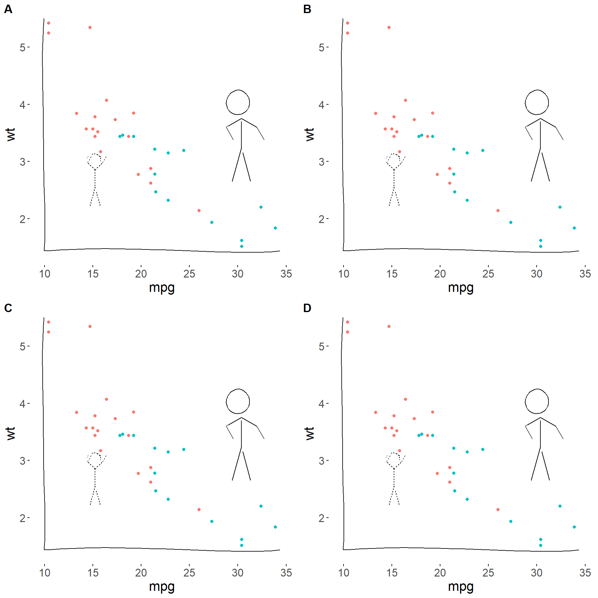

install.packages( "xkcd",dependencies = TRUE )
install.packages( "gridExtra" )
install.packages( "cowplot" )23 Stylized Plot Example
The code below shows how much control users have over graphics in R. The package xkcd was created to produce plots that look like they are the hand-drawn versions in the XKCD comic strip. They even allow you to add stick figures to the plots.
23.1 Custom Graphics Packages
library( ggplot2 )
library( gridExtra )
library( cowplot )
library( xkcd )23.2 xkcd Style
xrange <- range(mtcars$mpg)
yrange <- range(mtcars$wt)
set.seed(123) # for reproducibility
p <- ggplot() + geom_point(aes(mpg, wt), data=mtcars) +
xkcdaxis(xrange,yrange)
p
23.3 Add Stick Figure
ratioxy <- diff(xrange)/diff(yrange)
mapping <- aes( x, y, scale, ratioxy,
angleofspine,
anglerighthumerus,
anglelefthumerus,
anglerightradius,
angleleftradius,
anglerightleg,
angleleftleg,
angleofneck,
linetype=city )
dataman <- data.frame(x= c(15,30), y=c(3, 4),
scale = c(0.3,0.51) ,
ratioxy = ratioxy,
angleofspine = -pi/2 ,
anglerighthumerus = c(pi/4, -pi/6),
anglelefthumerus = c(pi/2 + pi/4, pi +pi/6),
anglerightradius = c(pi/3, -pi/3),
angleleftradius = c(pi/3, -pi/3),
anglerightleg = 3*pi/2 - pi / 12,
angleleftleg = 3*pi/2 + pi / 12 ,
angleofneck = runif(1, 3*pi/2-pi/10, 3*pi/2+pi/10),
city=c("Liliput","Brobdingnag") )
p <- ggplot() + geom_point(aes(mpg, wt, colour=as.character(vs)), data=mtcars) +
xkcdaxis(xrange,yrange) +
xkcdman(mapping, dataman) +
theme(legend.position = "none")
p
23.4 Grid Options
# library( gridExtra )
grid.arrange( p, p, p, p, ncol=2, nrow=2 )
# library( cowplot )
plot_grid( p, p, p, p,
labels= c("A","B","C","D"), ncol=2, nrow=2 )
dataman <- data.frame(x= c(15,30), y=c(3, 4),
scale = c(0.3,0.51) ,
ratioxy = ratioxy,
angleofspine = -pi,
anglerighthumerus = c(pi/2, -pi/3),
anglelefthumerus = c(pi/2 + pi/4, pi +pi/6),
anglerightradius = c(pi/3, -pi/3),
angleleftradius = c(pi/6, -pi/2),
anglerightleg = 3*pi/2 - pi / 8,
angleleftleg = 3*pi/2 + pi / 12 ,
angleofneck = runif(1, 3*pi/2-pi/10, 3*pi/2+pi/10),
city=c("Liliput","Brobdingnag") )
p <- ggplot() + geom_point(aes(mpg, wt, colour=as.character(vs)), data=mtcars) +
xkcdaxis(xrange,yrange) +
xkcdman(mapping, dataman) +
theme(legend.position = "none")
p